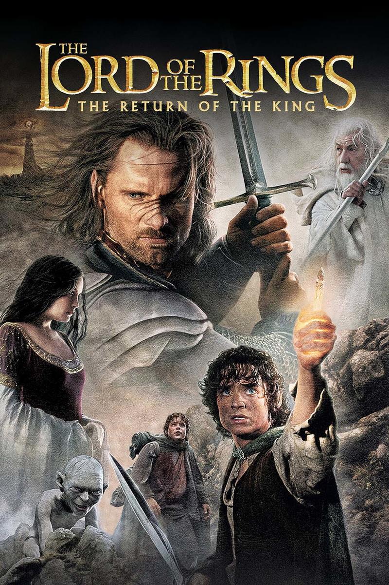

|  |
Gandalf lidera Aragorn, Legolas, Gimli e Théoden rumo a Isengard, onde encontram Merry e Pippin. Com a queda de Saruman, Gandalf descobre através de seu palantír que Sauron planeja destruir a cidade nobre de Minas Tirith e parte na tentativa de alertar seus governantes. Enquanto isso, Frodo Bolseiro e Samwise Gamgee são guiados por Gollum pelo território inimigo para Minas Morgul, onde descobrem o poderoso exército de Orcs que se prepara para aniquilar a raça dos homens. A pedido de Gollum, os três decidem tomar um caminho "secreto" alternativo rumo à Montanha da Perdição, porém Sam passa a desconfiar das intensões da criatura. Em Gondor, Pippin segue as instruções de Gandalf e secretamente acende o farol conclamando o auxílio de Rohan na luta contra Sauron. Em meio às batalhas, Elrond alerta Aragorn sobre o estado frágil de Arwen. Após uma visão de seu filho, Arwen recusa a deixar a Terra média e decide permanecer ao lado de seu verdadeiro amor. Elrond, então, entrega a mítica espada Andúril - antiga espada reforjada de Isildur - para que este possa reivindicar o trono de Gondor. |
|---|